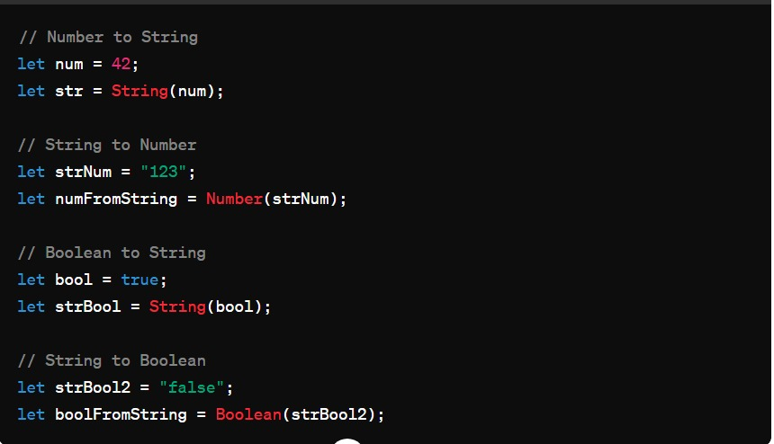
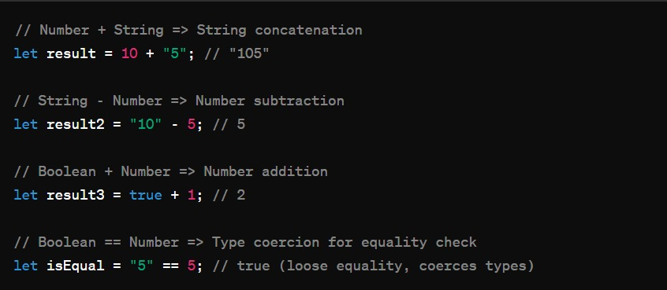

In JavaScript, type conversion and coercion are two concepts related to the handling of data types. They refer to the process of converting a value from one data type to another. While type conversion is explicit, coercion is implicit.
1.Type Conversion (Explicit):
Type conversion in JavaScript involves manually converting a value from one data type to another using explicit methods or functions.

2.Type Coercion (Implicit):
Type coercion, on the other hand, is the automatic conversion of values by JavaScript during operations.
